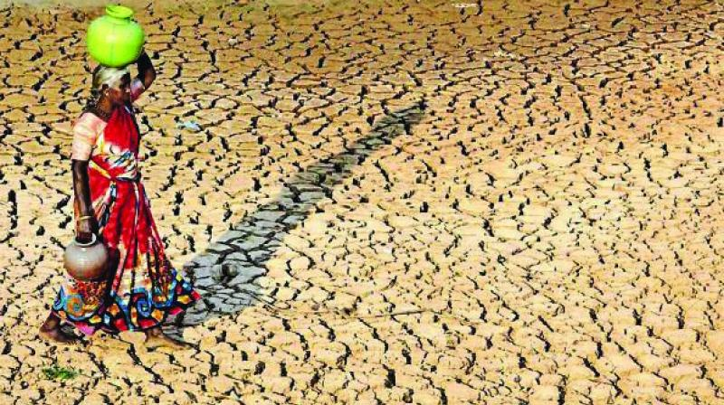
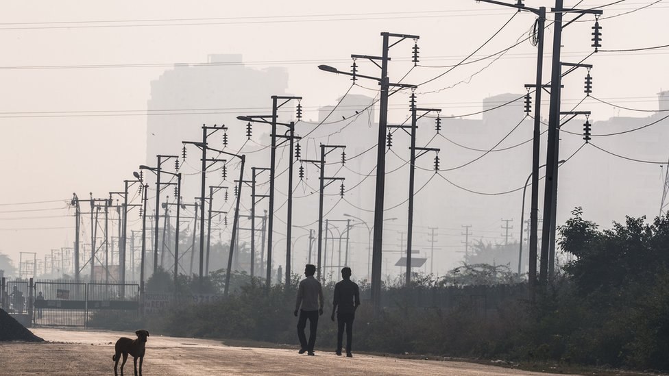

Water Scarcity
Water scarcity is a pressing global issue that occurs when the demand for water exceeds the available supply in a region or when the available water is of poor quality and unsuitable for use. It is a critical challenge that affects millions of people and ecosystems around the world, leading to significant social, economic, and environmental impacts.
Electricity Shortage
Electricity is a fundamental form of energy that powers modern society, providing lighting, heating, cooling, and enabling various technologies and industries. It is generated by converting different energy sources into electrical energy through power plants, which is then distributed through an electrical grid to homes, businesses, and other facilities.
Possible Solutions
- Implement rainwater harvesting systems.
- Encourage solar power installations.
- Invest in local infrastructure development.
- Promote sustainable energy practices.